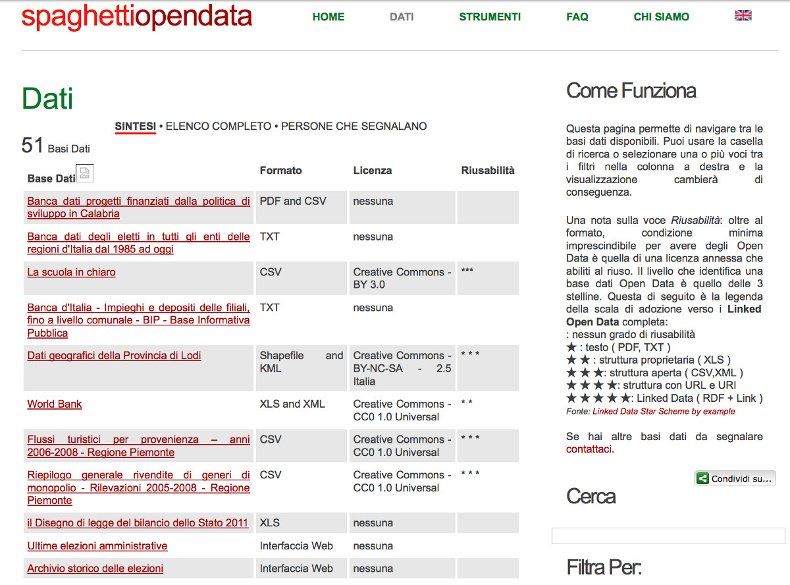

Siamo un gruppo di cittadini italiani interessati al rilascio di dati pubblici in formato aperto, in modo da renderne facile l'accesso e il riuso (open data). Alcuni di noi lavorano per amministrazioni dello Stato o di enti locali, altri no.
Se vuoi approfondire, leggi pure "Cosa siamo e cosa non siamo".
Cosa abbiamo fatto: il catalogo di dati costruito dal basso, prima di dati.gov.it
Tutto è nato nel 2010 da un post di Alberto che ha suscitato un certo interesse in rete: diverse persone ci hanno suggerito siti web e pagine interessanti, pieni di dati pubblici, e ci è venuta voglia di lavorare ad una pagina web che li raccogliesse. Da ottobre 2010 fino a novembre 2011, il sito spaghettiopendata.org è stato una sorta di portale dati.gov.it creato dal basso, dalla comunità. Un non portale degli Open Data italiani.

Alla pubblicazione del sito ufficiale dati.gov.it, abbiamo deciso di continuare a raccontarci e a confrontarci sul tema dei dati.
La mailing-list: il nostro luogo principale di discussione e confronto
Ci ritroviamo prevalentemente in una mailing list. Se vuoi partecipare vai qui: sarai il benvenuto. Tra noi ci sono sviluppatori, funzionari pubblici, data journalists, semplici curiosi che si sono appassionati al tema dei dati aperti. Se ti piace programmare, abbiamo anche un repository GitHub. Tutto il codice è aperto: se vuoi darci una mano a migliorare le cose che facciamo sarai, a maggior ragione, il benvenuto.